Bertolt Hoover
Bertolt's appearance
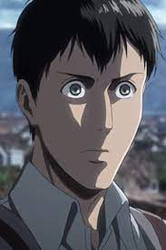 Appearance Human form Bertolt was a rather tall, slender young man. He was the tallest of all currently known holders of the power of the Titans. He had short, dark hair, brown eyes, thin eyebrows and an elongated face. He was seen mainly in his Trainee uniform, and after he entered the Survey Corps, he used their uniform. After his encounter with the Beast Titan, his hair appeared shorter and wore a trench coat. During the Warriors' battle in Shiganshina against the Survey Corps, Bertolt wore a set of vertical maneuvering equipment along with a collared shirt and dark pants.
Colossus Titan form As the Colossus Titan, he possessed a very distinctive appearance and a number of unusual features. His Titan form stood roughly 60 meters tall, making him around four times the height of any other Titan seen so far (with the only exception of Rod Reiss's Titan form and Eren Yeager's new Titan form). Bertolt's Colossus Titan form is one of the more heavily-deformed Titans seen in the series - he appeared to lack skin entirely and his jaw and facial structure seemed to be heavily altered from the human form. He was also constantly releasing jets of steam from the surface of its body, in a manner that parallels his frequent nervous sweating. His feet were also quite different to those of a human and other Titans, as they were swollen and pillar-like in appearance. His physiology was modeled after the male sex, but like all Titans, he lacked sexual organs. He had slim and disproportionately long arms in comparison to his head, body, and legs.
Bertolt's personality
Bertolt was a quiet young man who identified himself as someone with a weak will that follows popular opinion. Likewise, his instructor noted him to be a person with great potential, but an utter lack of initiative. He was further described by Eren Yeager as being taciturn, and Bertolt tended to remain in the background unless necessary. By his own admission, he was somewhat of a coward and was noted for his low self-esteem. His withdrawn behavior initially led to the impression of him being the least emotionally compromised of the three Titan warriors. He showed little attachment or remorse over his actions, seeming to care only about his partner, Reiner Braun. However, when confronted by his former comrades and questioned about their friendship, he revealed himself to be far more conflicted and guilt-ridden than it originally appeared. He showed great devotion to both of his fellow warriors, Reiner Braun and Annie Leonhart, and was easily driven to action or anger when he felt either was threatened. Initially, he showed himself to be wary of others and acted as a voice of reason to Reiner, repeatedly cautioning him about lowering his guard down. His interactions with Ymir also reveal that while his actions have caused considerable suffering, he was not a cruel person and was capable of showing genuine kindness towards others. Bertolt underwent a serious change in character shortly before and during the Battle of Shiganshina. He became detached, indifferent and cold, allowing him to fulfill his savage duty more efficiently. Bertolt remained calm and composed, and did not feel sorry or bad when he told his former friends that he will kill them and all humans inside the Walls because he had decided to do so. He was unfazed by Armin Arlert's attempt at manipulating him by bringing up Annie, did not feel panic or dread when other Survey Corps soldiers were going to kill the helpless Reiner and he had to leave him to himself. He noted how Armin is unable to do anything to him as long as he shakes in fear of his presence. Bertolt did not show complete disregard for the human race and his 104th Training Corps friends. He showed panic and slight tears when he, Reiner, and Annie left Marco Bott to die. When confronted by Armin, he referred to his former comrades as "cherished friends" and repeatedly stated that they are not at fault. This leaves the impression that Bertolt's reasons for wanting them to die were not personal, and were due to unknown factors outside of their current comprehension or knowledge. Bertolt once more showed sympathy for his old friends by expressing his disappointment in the waste of Armin's intelligence as he dies. He then decided to burn him as quickly as possible to put him out of his misery.
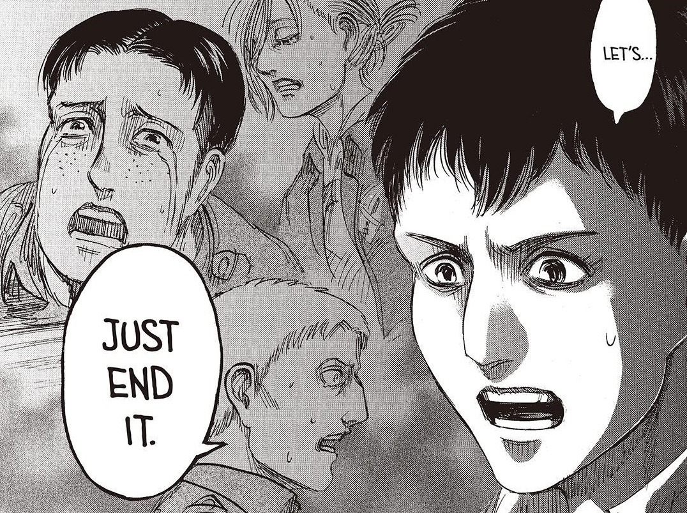 Bertolt came to accept his villainous self, and rationalized that none of it was his or anyone's fault, but that the world is cruel, and all of it was inevitable. When the blast of his transformation failed to kill all of the soldiers, he expressed his disappointment at his former friends' continued survival.
Despite his calmness and utter fearlessness in the face of death and destruction, Bertolt was absolutely terrified of the thought of dying himself. As Armin's Pure Titan approached him, Bertolt frantically begged his former friends to save him then cried and screamed for Reiner and Annie before being brutally devoured.
Bertolt's history
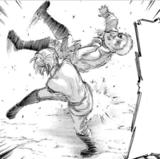 Bertolt was an Eldian born in the continent of Marley. At some point in his childhood, he joined the Marleyan military as a Warrior candidate. He was praised for his shooting abilities and was selected along with Annie Leonhart and Marcel Galliard to become Warriors and candidates to inherit the power of the Titans. Bertolt one day noticed a fellow candidate named Porco Galliard bullying Reiner Braun, a smaller candidate. After Porco left, Bertolt helped Reiner to his feet and formed a lifelong friendship with him. Upon acquiring the power of the Colossus Titan, he learned to use its power almost immediately.
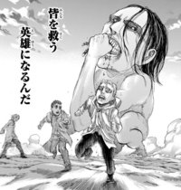 At some point in her childhood, Annie joined the Marleyan military as a Warrior candidate, meeting comrades such as Bertolt Hoover, Reiner Braun, and Marcel Galliard. Annie was praised as impeccable for her fighting abilities and was later chosen as one of seven promising candidates to inherit the power of the Titans. She was later granted the power of the Female Titan in accordance with her stellar combat skills. Alongside the rest of her Warrior comrades, the six Titans in Marley's command used their powers to crush an entire nation, testing their abilities in the process. The six Warriors proved themselves to be more effective weapons than their predecessors, largely alleviating Marley's concerns about entrusting the upcoming Paradis Island Operation to children.
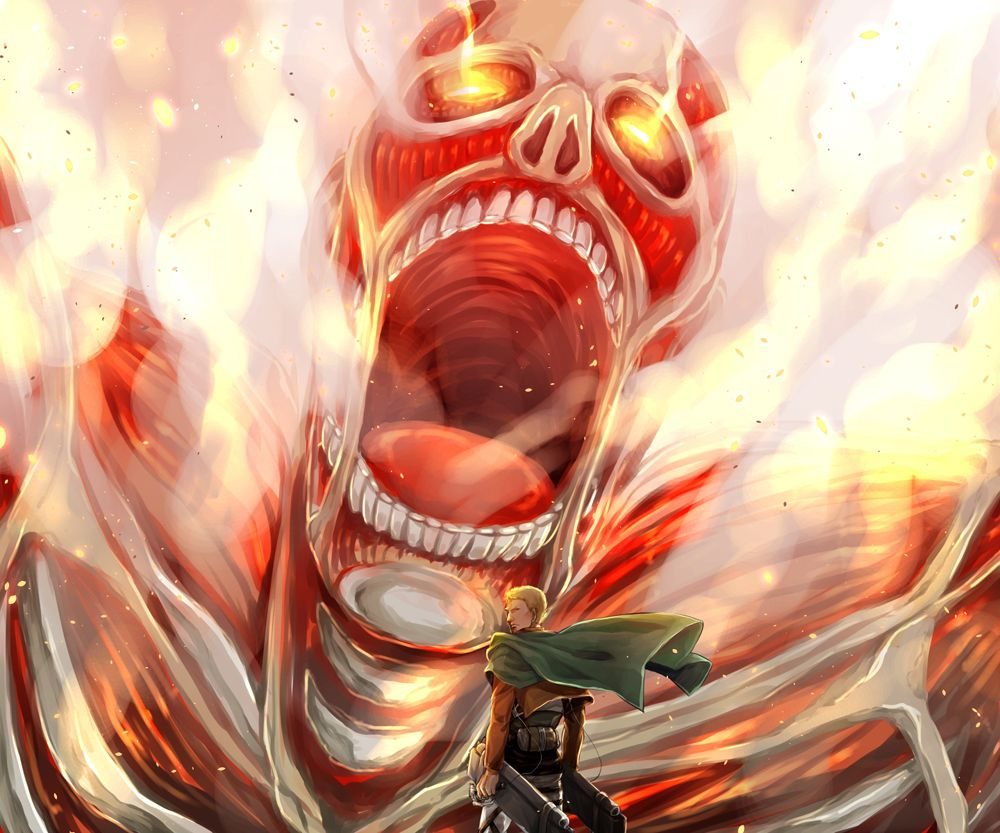 He, along with Reiner, Annie and Marcel, began a mission to attack the walled Eldians in the year 845. The main objective of the mission was to steal the power of the Founding Titan and bring it to the Marley government. The day they were about to breach Wall Maria, the Warriors encountered Ymir's Titan while traveling. Still in a mindless state, she attacked the three boys and nearly killed Reiner. Marcel ended up sacrificing his life to protect his friends, while Bertolt appeared to have fled in terror possibly abandoning the other two in the process. They later regrouped and were about to abandon the mission but Reiner stopped them, reminding them of the consequence. Annie, enraged and terrified, attacked Reiner whilst Bertolt could only watch the scuffle. After Reiner took the lead and decided that they would continue the mission, the remaining Warriors headed to the Wall and began their operation. Bertolt, upon witnessing the might of the wall, questioned if he could actually destroy it.
MEMES
|
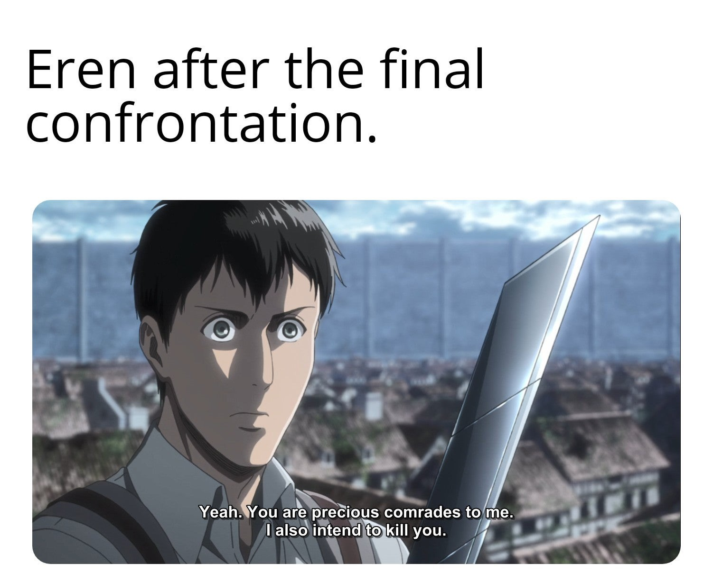
|
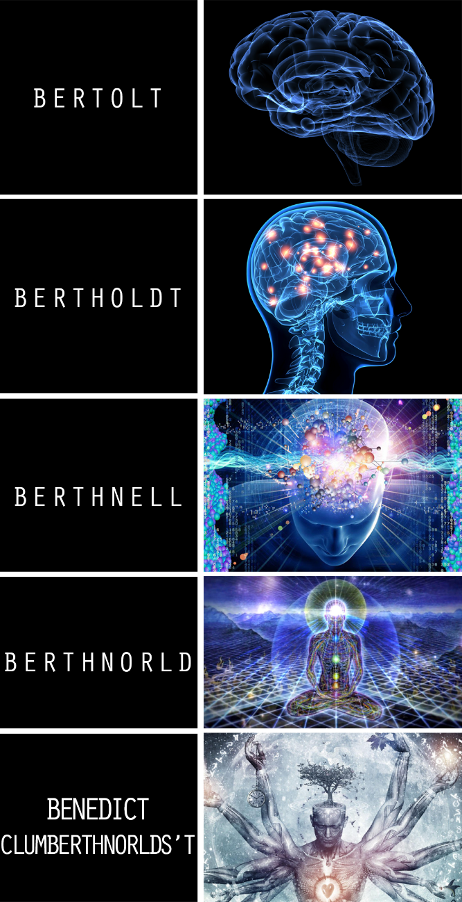
|
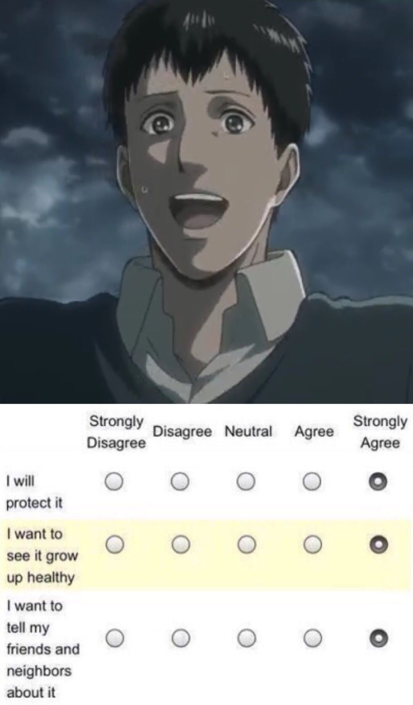
|
|
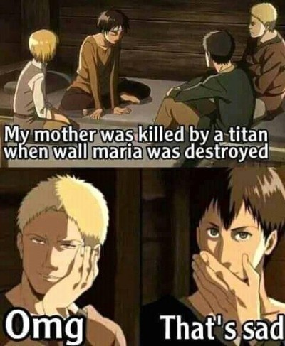
|
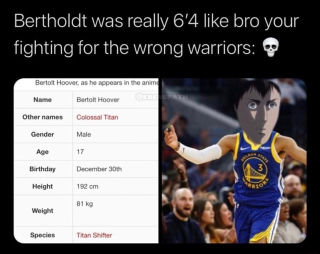
|
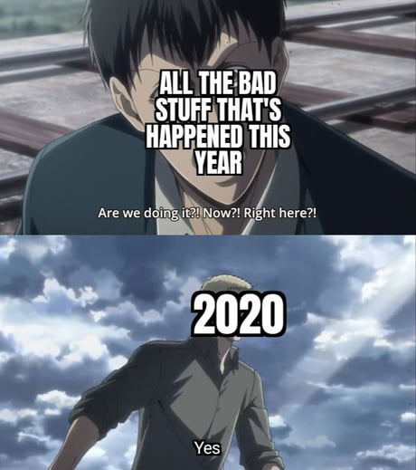
|